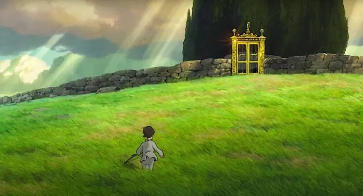

There's a lot to talk about with Hayao Miyazaki's "The Boy and the Heron."So much can be said about the development and eventual release of the film. Miyazaki had announced (yet again) that he'd retire after 2013's "The Wind Rises," and given his age, it felt impossible for him to make another movie even if he wanted to. And yet, "Heron" came out a decade later, with him already planning new films at the age of 82. The film began production despite the famous Studio Ghibli having disbanded. The movie was intended to release in time for the 2020 Tokyo Olympics, but was delayed in part to the director's slower workflow that came with age, and from afar, its completion felt like a race against time itself. Early on, the movie was titled "How Do You Live?," to be based on a Japanese novel of the same name, only for the international release outside of Japan to have a different title at the last minute, to the bewilderment of fans. The plot remained secret right up to its release, with only the book as a clue, although it ultimately had little to do with the film's story. To further keep the story secret, no trailers or images of the movie were shown right up to the Japanese release, requiring viewers to simply trust in Miyazaki's name to buy a ticket. The gamble worked, and it became the studio's highest grossing film (yet), but whether this was a genius stunt by producer Toshio Suzuki or an indication of Miyazaki's own doubt, or over-confidence, we may never know. I could go on about all of this and more, but there are other sources to mull over for that. This is meant to be a review. And my thoughts have never been so conflicted on a Ghibli movie. To continue the effort to not spoil the story, I'll try not to spoil the majority of it, although even if I did, you might not understand it (we'll get to that). It feels like a cross of "Sprited Away" and a bit of "Princess Mononoke." Perhaps with a dash of "Tales of Earthsea" and even "The Cat Returns," but with man-eating birds instead of cats. Set in Japan during World War II, a pre-teen boy named Mahito quietly tries to live in dignity after losing his mother in a hospital fire. He's unusually mature for his age, rarely speaking unless he needs to, and always bowing to his elders in respect. In this period, this is expected, as young men are sent to war in frequent parades that pass by. Mahito doesn't want to cause trouble, especially with a single father raising him who must also be struggling with grief, or perhaps Mahito feels this is a weight to bear for his guilt of being unable to save his mother. Quickly into the film, Mahito and his father move out of Japan to the countryside, where he's introduced to his new mother, Lady Himi, who the father is marrying. Himi is his mother's sister, and his aunt. And is also pregnant with what will be a new sibling. She seems like a lovely person, and Mahito manages to act courteously. Unusually so, with a new home, new family, new school, and so on, but whatever emotions he might have, he keeps entirely to himself. No anger, no sadness, no joy. For the sake of those around him, he'll behave and be the good boy he needs to be. The new home is large and luxurious, with a small army of elderly "grannies" that serve the Lady, who whisper that they "hope he'll be safe" behind Mahito's back. It's on a large property with a forest and marsh near by. There's a mysterious, condemned tower near the back of the property. And there's a single large Heron. It seems to stalk Mahito, while straining its throat to make human-like noises... like "mother"... and "your presence is requested"... When Lady Himi goes missing one night, Mahito is forced to play into the Heron's hands, and goes on a journey to another realm through time and space.After "Ponyo" (aimed for a young audience) and "The Wind Rises" (aimed for an older audience), this is a return to a the type of fantasy adventure that Hayao Miyazaki is famous for. It's shockingly dark though, and probably best for audiences 14 and over, for depictions of violence and almost constant peril. One early scene viewers are citing is after a fight with other school kids, where a bruised Mahito walking home alone stops, takes a rock, and bashes himself with it, gushing litres of blood and leaving a permanent scar on his head. As to why he'd do this... perhaps it was self-hate for breaking composure and fighting, or because he wanted more attention from his father, or because he wanted an excuse to stay home from school and explore the new home... but self-mutilation is still a serious matter to witness on screen. And while there was always some sense of danger in many of Miyazaki's movies, it often lets itself go in favour of whimsy and wonder. In "Heron," the sense of forbodding is always present, even in the house before the journey begins. And when it does, it feels like one wrong step could mean a grisly death, and not one that can be solved with a riddle or magic spell: our hero simply has to take one step at a time and hope for the best. The mystery of what exactly is going on helps play into this atmosphere. But this means the whimsy, which does exist here and is what Miyazaki excels at most, never gets a chance to take proper attention from the audience. Another divisive issue is Mahito himself. He's too mature and cold, and seems to constantly be brave and without fear, and without major flaws. He's similar to the young adult Ashitaka from "Princess Mononoke," but Ashitaka at least had moments when he smiled and laughed, with a curiousity to learn that made him seem human. Mahito doesn't have any of this, a blank slate without a journey of self-discovery or reflection, and doesn't appear to have changed much by the end of the movie. Granted, this is EXACTLY how I felt I acted as a boy his age, or at least wanted to be, so I understand the intention. But he would be more relatable if there was a single scene of an emotional outburst... crying or throwing things when viewing a picture of his deceased mother, for example. Without that, Mahito makes for one of Ghibli's most boring protagonists.  "Heron" is full of interesting ideas and scenes, some of which could rival the most iconic to come out of Ghibli. Some are cute and warm, some are heartbreaking, some are awe-inspiring, some are though-provoking. The cuter moments in particular feel like the real Hayao Miyazaki peeking through to say hello. But they're all also disjointed, as if they come from two or three completely independent films. Miyazaki famously begins production on his films before the script is fully complete, and that's never felt as obvious as it does here (in one screening, Miyazaki is quoted to say "even I don't understand it" on the finished movie). Being aware of his age, it feels like he took a dozen unused ideas, shuffled them in a card deck, and drew them out randomly, cramming them all somewhere in this story instead of saving them for a different project. In a way, the movie could be described as a "lucid dream" by one of the greatest living creative minds, but that might be making excuses for clumsy writing.And ultmately, there's a lack of answers. I like how the movie ended, but there are holes and gaps never addressed, left for you to fill in with your own imagination. The meaning or intention behind each action or line of dialogue could be interpreted in many ways. Any random five-minute segment could warrant a full essay of analysis. There's a clever interpretation that there's a metaphor of Miyazaki, the creator and leader of Ghibli, speaking to his son Goro or a future grandson, represented by Mahito, late in the movie. But while it can be fun to ponder, I can't help but notice how straightforward and simple virtually all of Miyazaki's prior filns have been by comparison. This is more like a surreal dream than a new fairy tale you can openly share.Admittedly, I wasn't impressed at first with the visuals of "The Boy and the Heron." Yes, Ghibli movies look great, but we've seen these before, and we've seen much more inventive visuals since then. The parts that really tugged at my nostalgia for what Miyazaki does best were the character designs, specifically the "grannies," and the Heron himself, who morphs into increasingly unnatural forms before eventually becoming a goofy-looking creature. But in motion, there are some brief moments where the production team tries to be ambitious. The opening scene of the hospital fire is a clear example, where lines radiate out as if it was all a memory from a reaccuring nightmare. Another is when a bow and arrow seems to get a mind of its own, and shakes with the energy and tension of a hurricane before hitting its mark. And visually, the film isn't afraid to render things that are nightmarish and grotesque, in ways you haven't imagined before. Even though Ghibli has worked wonders over many decades, there's yet to be a studio that can reproduce what they do, and "Heron" is at least slightly unique against anything they've made before. Joe Hisashi (himself 73 in age) returned for this movie's score. I was shocked at how little his score appears in the film. Most of the movie is quiet, with clean detail in sound effects like footsteps, rustle of paper and rolling of a pencil. When it is present, it's beautiful, but it blends so well with the movie that you probably won't notice it. I first saw the English dub by GKIDS, and it's impressive, with A-list actors both new and old (from previous Ghibli dubs) in the cast. High scores are especially warranted for Robert Pattinson as the Heron - even if you're a subtitle purist, the dub must be experienced once to hear his spot-on performance. The movie is also (I believe) the first Ghibli movie to be screened for IMAX theatres. That's how I first saw it, and the aspect ratio did appear to be specific to IMAX. However, I don't think it was warranted, despite my love for 2D animation; a small indie movie theatre would be just as fine, and perhaps more appropriate. In both story and animation, "The Boy and the Heron" is a clear attempt from Hayao Miyazaki to challenge himself and make something he's never done before. It's not as well put together as anything else he's made... it could have used a few more months to clean up the script and storyboards before going into production, and one could trace ways where the story could be tightened and improved. But it's also deep with meaning, and is possibly his most personal film yet, warranting and rewarding multiple viewings. This is one of the rare cases where I've paid to see it twice at the theatre. For its intended audience, serious-minded young teenage boys, I feel like it might grow on me in time, and this might be viewed as one of the "cooler" movies to watch for new viewers (but is a doozy if this is your first exposure to Ghibli). As to where I'd rank it, I'd put "The Boy and the Heron" somewhere in the bottom half of his movies. This might not be Miyazaki's best film, but it might be his most interesting.
- "Ani" More reviews can be found at : https://2danicritic.github.io/ Previous review: review_The_Boy_and_the_Beast Next review: review_The_Breadwinner